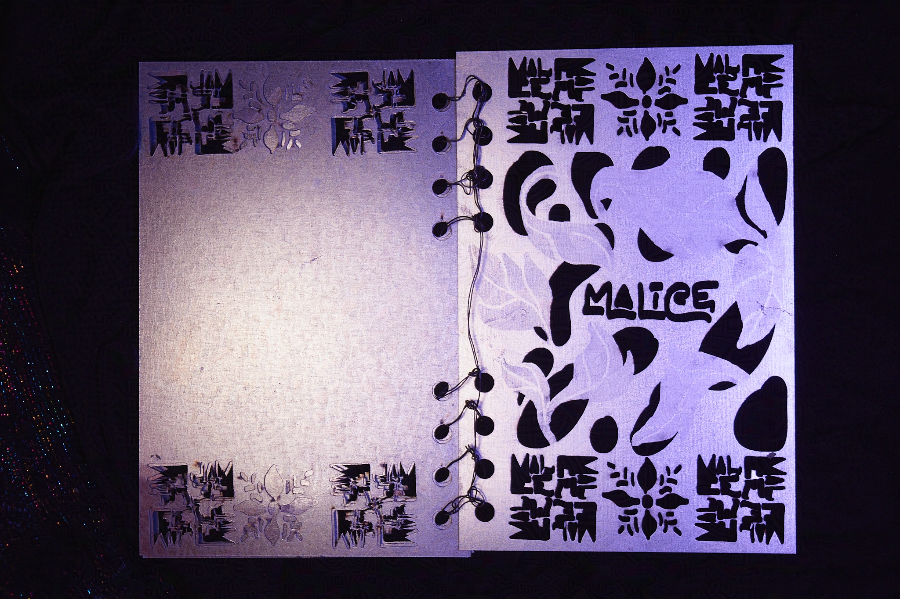

Malice
An abstracted autobiographical investigation of memory through book design and materiality.
Cover spread.
Malice is a part of my Book as House series, which are a collection of single edition artist books made from materials associated with residential spaces.
Specifically, it contrasts the tender warmth conventionally associated with childhood with the cold, rigidity of metal. This duality is emblematic of the negative experiences of my early childhood, such as otherness, injury, and unhealed parental trauma towards poverty. The poetry written inside is a typeface designed from my handwriting. Analogous to me being left-handed, customizing type that is sinistral (of the left hand) instead of the conventional dextral (of the right hand), I am reclaiming my personal otherness in how it relates to me as a designer. It was, and is, through art and narrative that I seek refuge. ‘Remember thy Name’ is configured with ligatures to resemble the quirk of glyphs cradling one other.
Etched Galvanized Steel Sheet and Wire. Designed in Adobe Illustrator. Type design based on handwriting. Processed in FabCreator. Digitally fabricated in FabLight Metal Cutter.